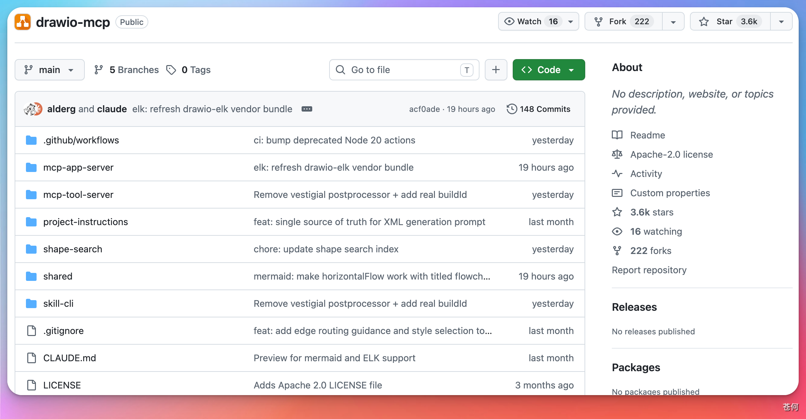
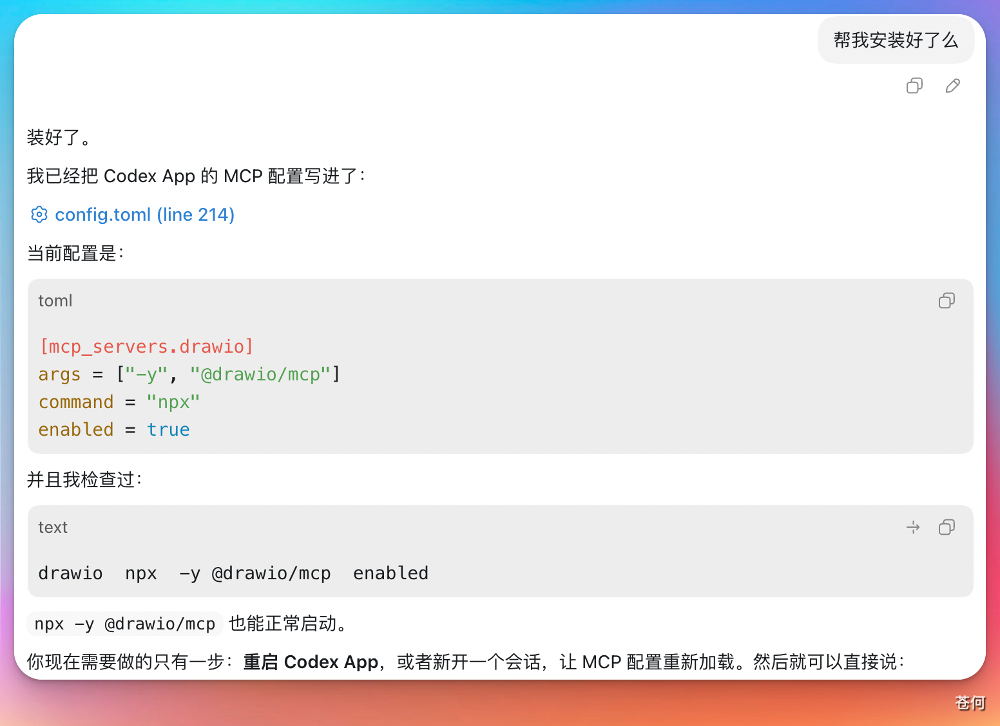
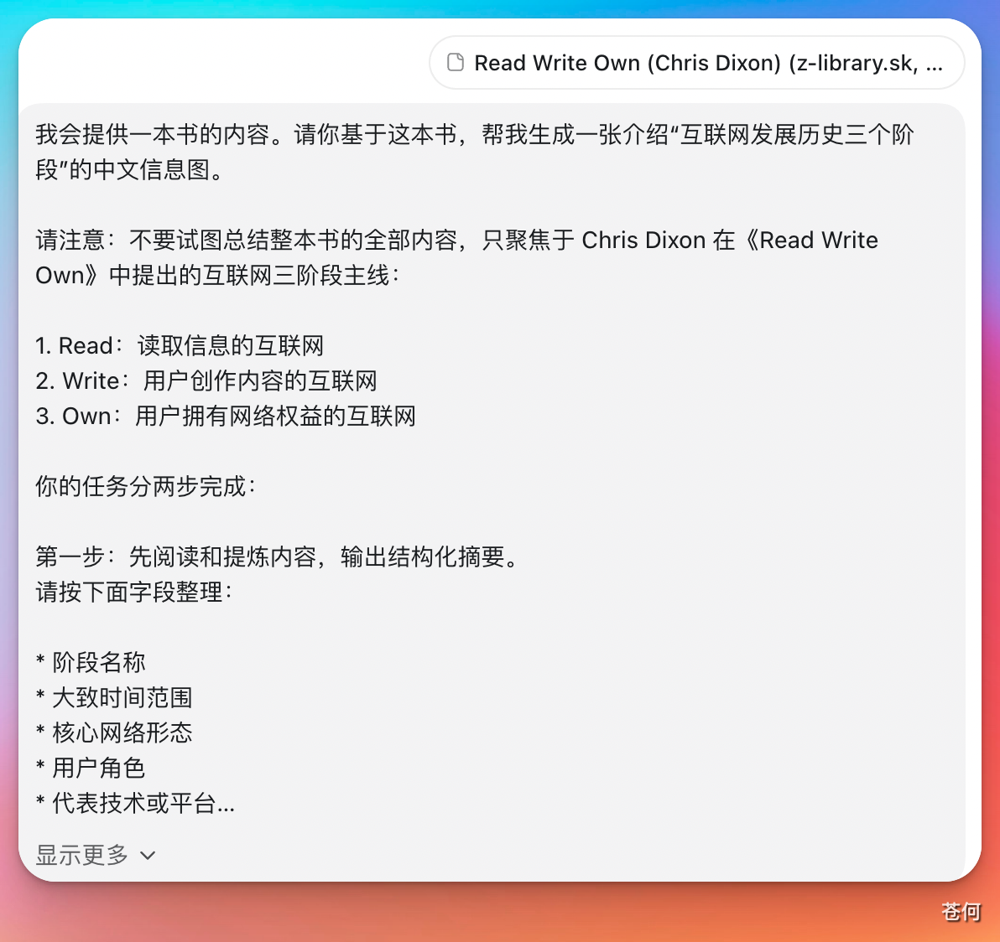
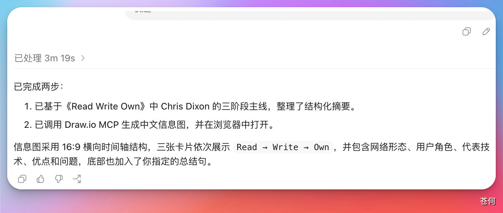

俗话说，一图胜千言。当我们想要介绍一个项目架构、业务流程，或者系统模块关系、日常读书的核心逻辑时，如果只用文字讲，读者很容易看累。如果我们能把它整理成一张信息图或者流程图，理解成本就会降低很多。
Draw.io 就是一个非常好的工具。它可以用来绘制：
- 流程图
- 架构图
- 思维导图
- 系统设计图
- 业务流程图
- 技术路线图
很多程序员、产品经理、架构师都会用它来表达复杂系统之间的关系。前段时间，Draw.io 官方发布了自己的 MCP。
GitHub 地址：https://github.com/jgraph/drawio-mcp

本章节介绍如何使用 Codex 安装、使用 Draw.io 的 MCP 工具，去绘制信息图或架构图。
1. 安装#
可以在设置里面添加，但需要填写对应的配置选项：

更简单的方法是直接把 Draw.io MCP 的 GitHub 仓库链接丢给 Codex，让 Codex 帮我们完成安装。

如果它没有理解你的需求，就让它直接安装，说："安装之后，请确保我可以直接使用。"它就会帮你完成安装的过程。
安装完成之后，确认一下即可：

2. 开始使用#
我选择一本书的内容，让 Draw.io 根据这本书的核心观点，绘制一张中文信息图。

你可以随意要求它，自定义要绘制的内容、主题、风格等相关要求。
提示： 在提示词里一定要强调使用 Draw.io 的 MCP 去完成任务，这样它才会调用这个工具。

绘制完成之后，它会针对本次任务进行总结，并且自动打开浏览器显示绘图结果。

绘图结果如图所示：